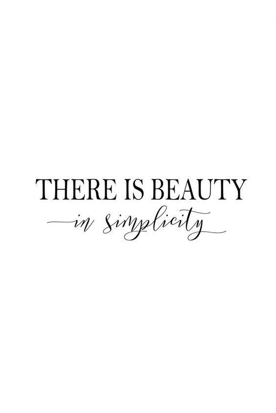

<!DOCTYPE html>
<html>
  <head>
    <title>My experiment</title>
    <script src="https://unpkg.com/jspsych@7.3.3"></script>
    <script src="https://unpkg.com/@jspsych/plugin-html-keyboard-response@1.1.2"></script>
    <script src="https://unpkg.com/@jspsych/plugin-image-keyboard-response@1.1.2"></script>
    <script src="https://unpkg.com/@jspsych/plugin-preload@1.1.2"></script>
    <link href="https://unpkg.com/jspsych@7.3.3/css/jspsych.css" rel="stylesheet" type="text/css" />
    <style>
    </style>
  </head>
  <body></body>
  <script>

    // initializing JsPsych
    var jsPsych = initJsPsych({
        override_safe_mode: true,
        on_finish: function() {
            jsPsych.data.displayData();
        }
    });

    // initializing timeline for later use
    var timeline = [];

    // preloading images
    var preload = {
        type: jsPsychPreload,
        images: ['img/quote1.png', 'img/quote2.png', 'img/quote3.png',
                 'img/quote4.png', 'img/quote5.png', 'img/color1.png',
                 'img/color2.png', 'img/color3.png', 'img/color4.png',
                 'img/color5.png'],
        auto_preload: true,
        message: 'Please wait while the experiment loads...',
        // don't stop the experiment if there are file loading errors or if loading times out
        continue_after_error: true 
    };
    
    timeline.push(preload);

    // welcome message for users
    var welcome = {
        type: jsPsychHtmlKeyboardResponse,
        stimulus: "Welcome to the experiment. Press any key to begin."
    };
    
    timeline.push(welcome);

    // instructions for users to complete task
    var instructions = {
        type: jsPsychHtmlKeyboardResponse,
        stimulus: `
            <p>In this experiment, an image will appear in the center 
            of the screen.</p><p>If the image contains <strong>color</strong>, 
            press the letter F on the keyboard.</p>
            <p>If the image does not contain <strong>color</strong> (appears
            black and white or grayscale), press the letter J .</p>
            <div style='float: left;'></img>
                <p class='small'><strong>Press the F key</strong></p>
            </div>
            <div style='float: right;'></img>
                 <p class='small'><strong>Press the J key</strong></p></div>
            </div>
            <p>Press any key to begin.</p>
        `,
        // set gap before first trial appears
        post_trial_gap: 2000
    };

    timeline.push(instructions);

    // listing images that will be used in trials
    var test_stimuli = [
        { stimulus: 'img/quote1.png' },
        { stimulus: 'img/quote2.png' },
        { stimulus: 'img/quote3.png' },
        { stimulus: 'img/quote4.png' },
        { stimulus: 'img/quote5.png' },
        { stimulus: 'img/color1.png' },
        { stimulus: 'img/color2.png' },
        { stimulus: 'img/color3.png' },
        { stimulus: 'img/color4.png' },
        { stimulus: 'img/color5.png' }
    ];

    // originally fixation cross, altered to just be a 500 ms intertrial interval
    var fixation = {
        type: jsPsychHtmlKeyboardResponse,
        stimulus: ' ',
        choices: "NO_KEYS",
        trial_duration: 500,
        data: {
            task: 'fixation'
        }
    };

   // organizing total of each type of image for easier analysis
    var test = {
        type: jsPsychImageKeyboardResponse,
        stimulus: jsPsych.timelineVariable('stimulus'),
        stimulus_width: 500,
        choices: ['f', 'j'],
        data: {
            task: 'response'
        },
        on_finish: function(data){
            data.correct = jsPsych.pluginAPI.compareKeys(data.response, 'f');
        }
    }

    // combing fixation and test into single trial
    var test_procedure = {
        timeline: [fixation, test],
        timeline_variables: test_stimuli,
        repetitions: 1,
        randomize_order: true
    }

    timeline.push(test_procedure);

    // debrief for post-experiment; provides accuracy and reaction time
    var debrief_block = {
        type: jsPsychHtmlKeyboardResponse,
        stimulus: function() {

            var trials = jsPsych.data.get().filter({task: 'response'});
            var color_trials = trials.filter({correct: true});
            color_trials = color_trials.count();
            var bw_trials = trials.filter({correct: false});
            bw_trials = bw_trials.count();
            var total_trials = color_trials + bw_trials;

            return `<p>There were a total of ${total_trials} images across trials.</p>
                <p>${color_trials} of these images contained color.</p>
                <p>${bw_trials} of these images did not contain color.</p>
                <p>Press any key to complete the experiment. Thank you!</p>`;

        }
    };

    timeline.push(debrief_block);

    // runs the experiment
    jsPsych.run(timeline);

  </script>
</html>